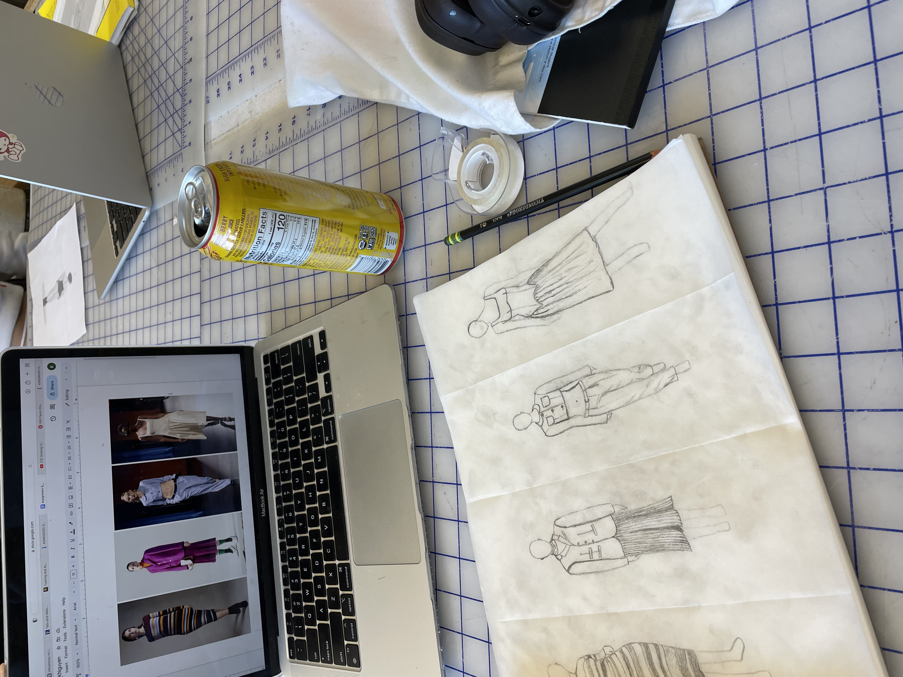

Kim Nguyen is a 21 year old Vietnamese American woman from southern California living in San Francisco, CA at the time of the creation of this time capsule. She grew up during the birth of the digital age, thus her online activity is extensively documented. This will be a collection of her digital interests and activity.
Kim's main interests involve fashion. She is currently studying Apparel Merchandising at SFSU. A majority of the content she consumes has to do with fashion and its industry. Some of her favorite designers and brands are Maison Margiela, Shushu/Tong, and Fanci Club. She would describe her style as clean cut, feminine, and subversive. Some common motifs in her closet are off-the-shoulder tops, pleated skirts, and kitten heels.
In her free time, Kim enjoys going to museums, jazz shows, or karaoke. There's nothing better than experiencing art and music with friends. She also loves eating out with friends. Having large meals with large groups is essential to her happiness. Cooking together with her roommates is a weekly occurence in her house.
Kim is a pervasive consumer of media with a special interest in 2010s television sitcoms and crime shows. She is one to rewatch part of a movie she knows she likes rather than starting a new one. If she's not watching something on one of her various streaming platforms (Netflix, Hulu, Disney +, HBO Max, none of which she pays for herself), she's scrolling on her phone. Kim is active on every major social media app except for Snapchat. She posts her own content the most on Instagram, but she spends the most time on TikTok. When stressed out, she chooses to scroll through the mindless, endless feed of TikTok. So, with being a full-time student while also working a part-time job and balancing a social life...she spends a lot of her free time on TikTok. Sleep is something that often escapes her. Her lack of sleep explains a lot about her personality.